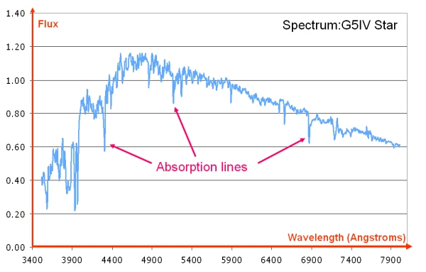
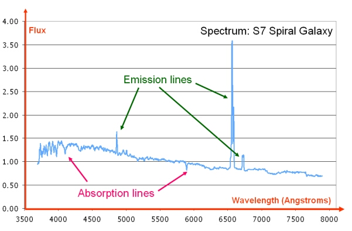

Although quantum mechanics suggests that a transition between energy levels will produce a spectral line at a discrete wavelength, there are a number of processes which can lead to a broadening of the lines. These include:
- Natural broadening due to the Uncertainty Principle
- Thermal Doppler broadening
- Collisional broadening
- Zeeman splitting
For an emission line, we can measure the spectral line profile relative to zero intensity, while for an absorption line, we can measure the spectral line profile relative to the continuum level. An absorption feature that extends to zero intensity is considered saturated. The images below show absorption features in a stellar spectrum (a G5IV star) and both emission and absorption features in a galaxy spectrum (an S7 spiral galaxy).

Dataset: VizieR catalogue III/219, Spectral Library of Galaxies, Clusters and Stars (Santos et al. 2002)

Dataset: VizieR catalogue III/219, Spectral Library of Galaxies, Clusters and Stars (Santos et al. 2002)
A useful way to compare the strength of absorption lines is by determining their equivalent width.